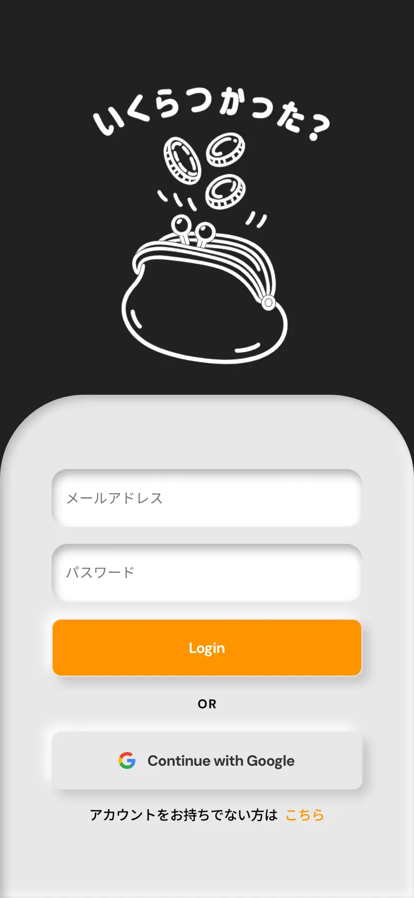
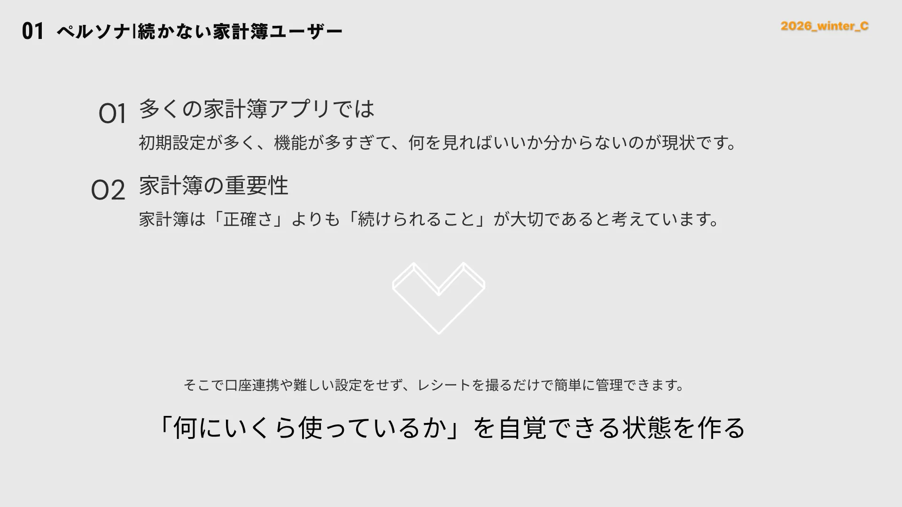
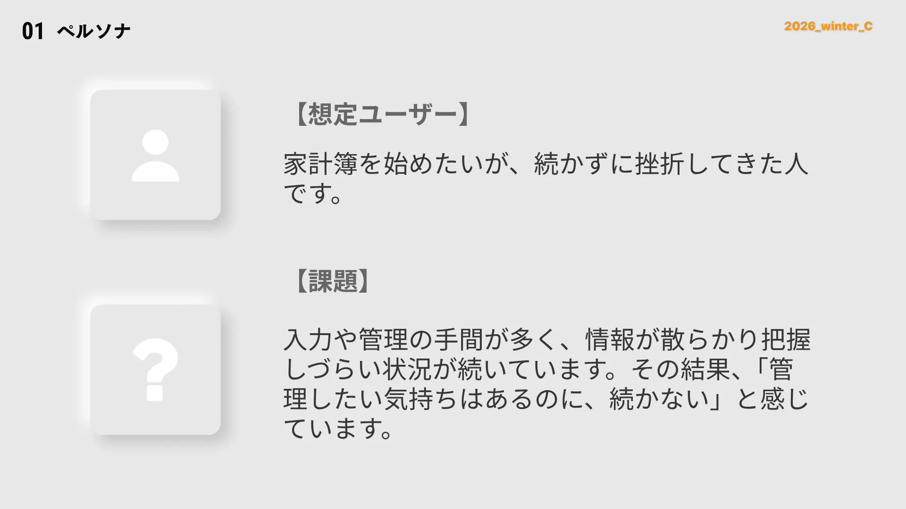
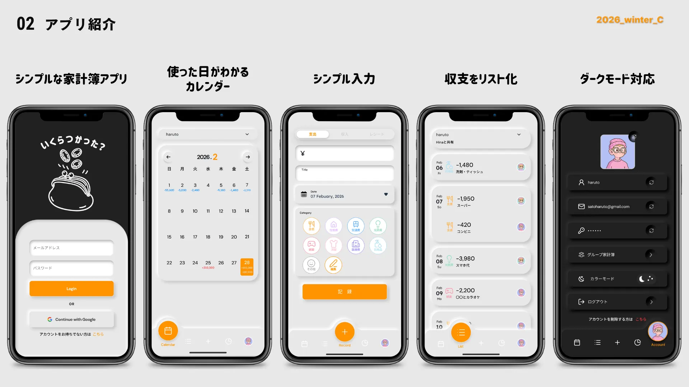
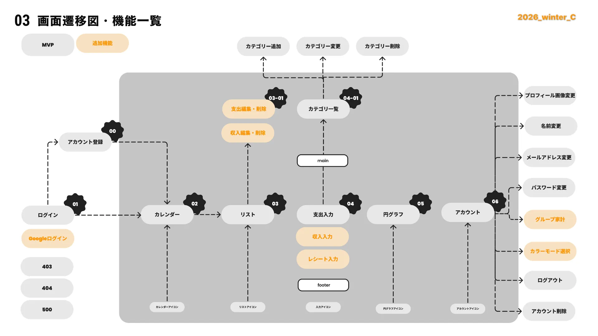
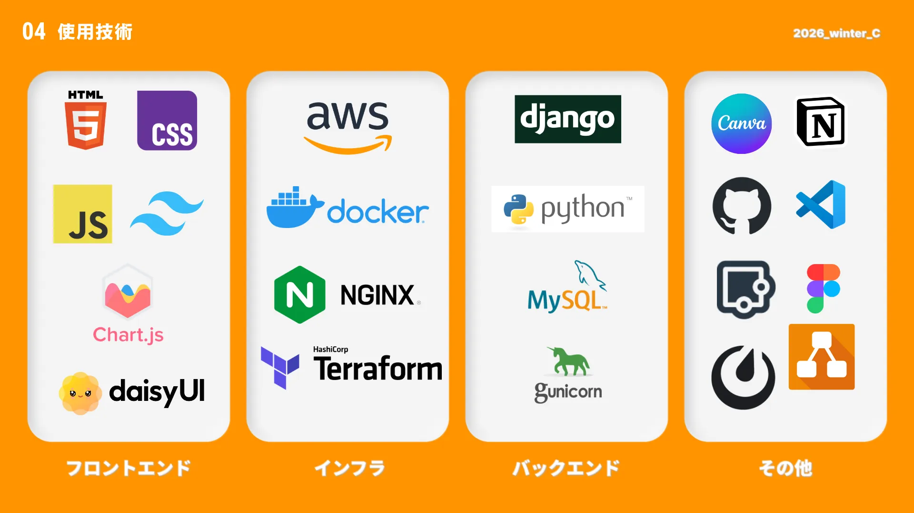
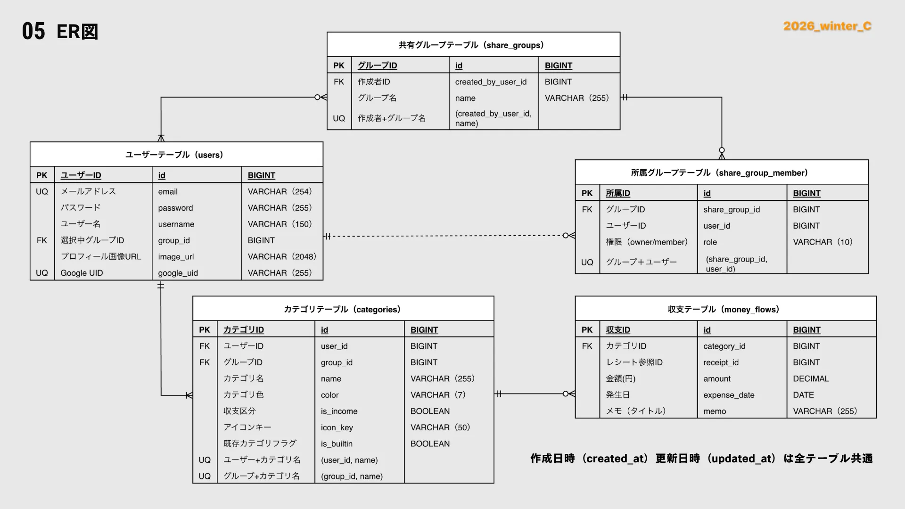
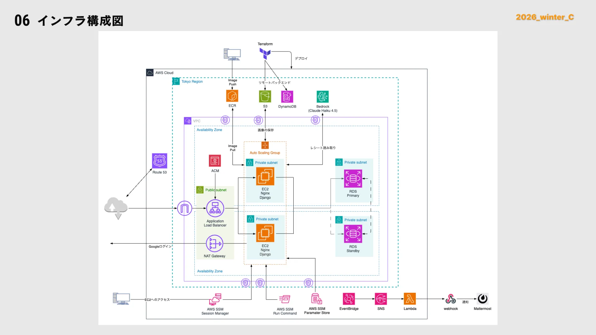

機能やUI/UXを決めた方法は？
 おこめ
おこめ
使いやすさを自分の感覚で決めていいのか、最初に迷いました。既存アプリを何個もダウンロードしてチーム全員で触り、良し悪しを共通言語に。正確さより"続けられること"を選び抜きました。
リーダーとして悩んだことは？
おこめ
誰かの作業が遅れたとき、担当を引き取れば学びの機会を奪ってしまいます。でも締め切りはある。この両立が一番苦しかったです。答えは"備える"こと。仮の処理と切り替え期日を先に決め、完成へ導きました。
チームメンバーとは
どんな感じだった？
おこめ
リーダーとして気持ちが張り詰める場面も多くありました。それでも走り切れたのはやはりチームの存在です。詰まったとき一緒に手を動かし、深夜まで相談しながら進めた時間が、今の私のチーム開発の原風景になっています。


大変だったことは？
おこめ
開発2週間半、ハッカソンの規定変更でReactが使用不可に。準備してきた構成が崩れても悩む時間はありません。頭を切り替え、技術の再調査と統一感を出せるニューモーフィズムを選び、5日で全画面を作り直しました。
実装ではなにをしたの？
おこめ
共有機能の権限まわりも担当しました。誰が作れて誰が見られるのか、関係を一つずつ整理し、DB設計から実装まで通しました。Figmaのフレーム名を実装パスに揃え、迷子が出ない仕組みも作りました。
ハッカソンしてみてどう？
おこめ
ハッカソン1回目はメンバー、2回目はサブリーダー、そして3回目はリーダー。役割が変わるたびに見える景色も変わりました。ものづくりの一員としてプロダクトに貢献していきたいです。






